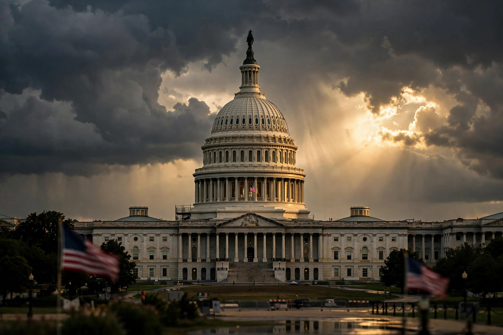

Top stories
Washington insider news leads Politico

Politico's homepage is built for Washington professionals: fast political news, policy verticals (health care, energy, defence, tech), and the Playbook newsletter franchise that starts the capital's day.
Congress
The Hill, leadership and legislation
Congressional coverage is Politico's home turf.
White House
The administration's moves
West Wing reporting.
Playbook
The morning must-read newsletter
Playbook's items set the day's agenda in Washington.
Magazine
Long-form politics features
Politico Magazine's profiles and essays.
Latest & most read
- Politico Europe: the Brussels edition
- Live: election results and trackers
- The policy newsletters: Pro briefings
About
Background on this news organisation: Wikipedia article.